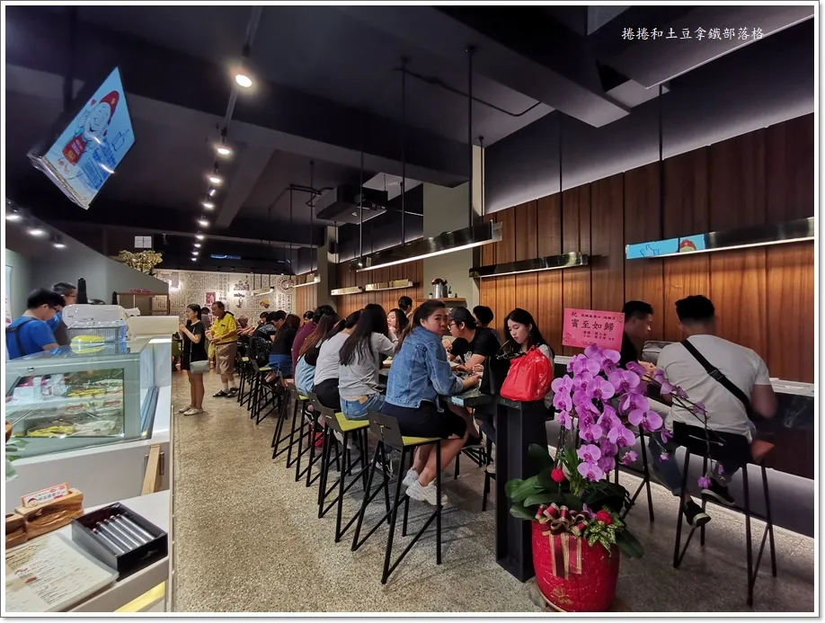
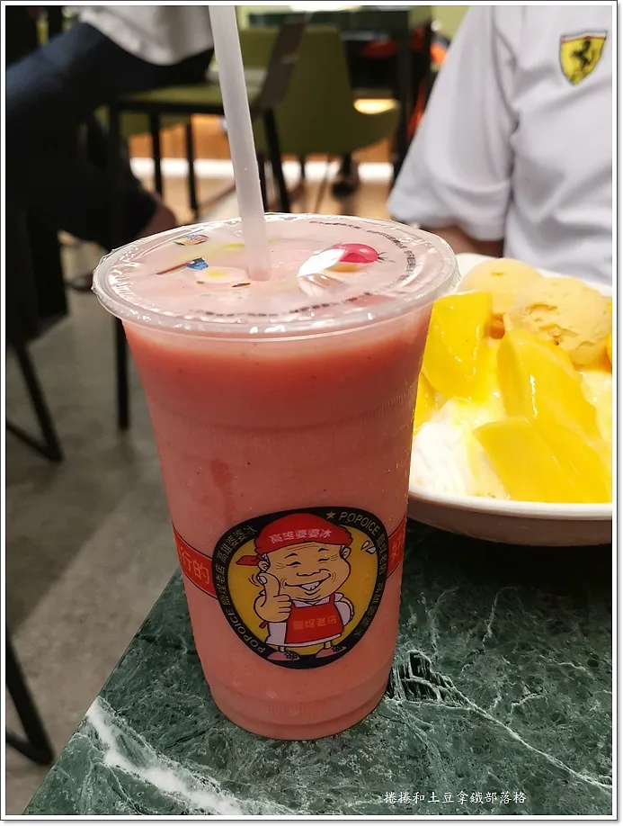
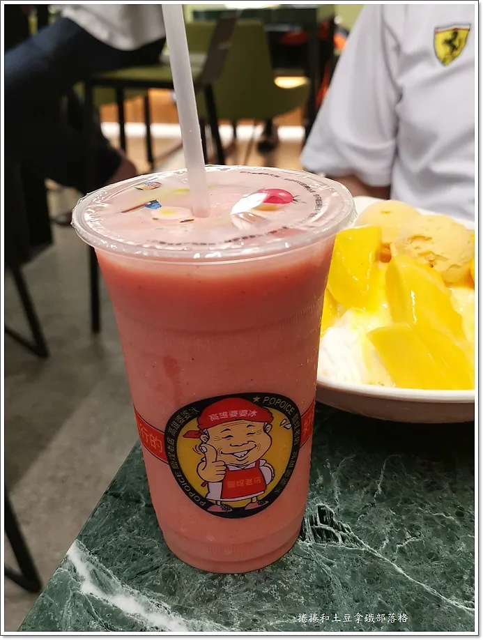
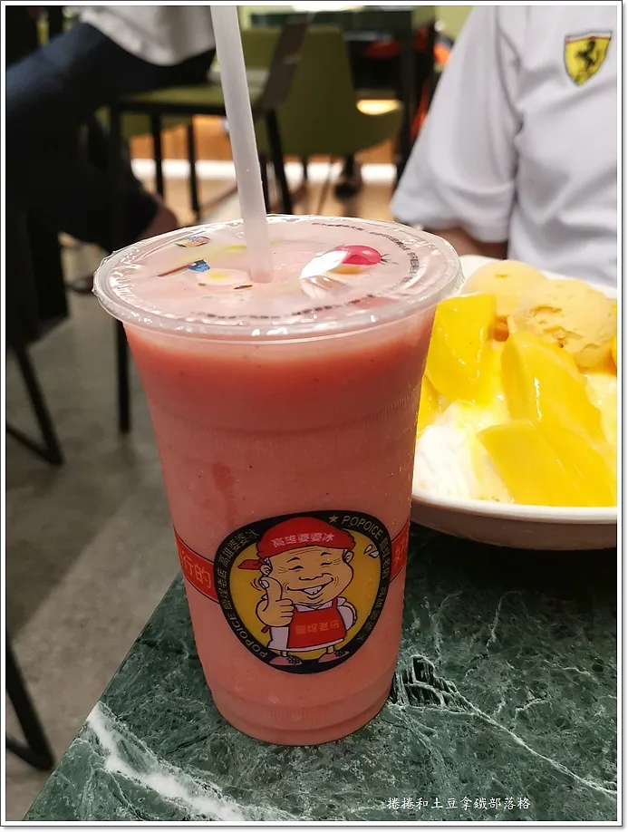
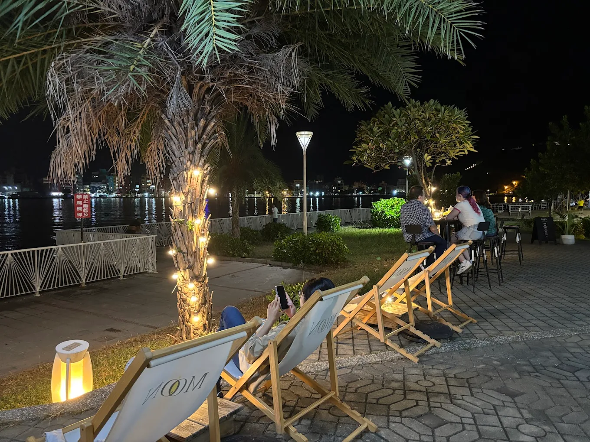

台南・高雄
2026.01.24 ・ 均的專屬二日遊
DAY 01
DAY 02
10:00 PM
台南往高雄
區間3159次 10:10~11:14 (1時4分)
11:30 PM
12:00 PM


12:45 PM
第三站：高雄婆婆冰 (創始店)
鹽埕區百年老冰店，新裝潢變得文青有活力

 


13:30 PM
13:45 PM
直接走到駁二我不管
不得反抗
14:00 PM
15:30 PM
腿應該沒力了吧，沒辦法，繼續走，不然能怎樣
16:00 PM
16:30 PM
17:00 PM
看夕陽、到處逛逛
18:45 PM
第八站：Moon月鯉灣景觀咖啡酒吧
看海吹海風喝咖啡。

20:00 PM
回家吧好累喔
求你了
11:30 PM


12:30 PM


14:00 PM


15:30 PM


18:00 AM


19:30 AM
你就去找你朋友
哼。